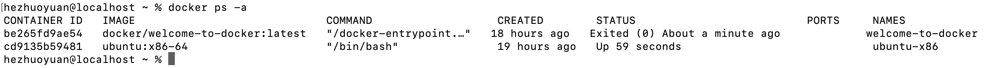

Docker入门
Docker 入门
这篇文章讲讲 Docker 的入门级使用.
最初使用 Docker 是编译原理的大作业, 助教提供了配置好的 Docker 镜像, 这样就免去了系统与环境配置的烦恼. 购入了苹果的 Apple Silicon 芯片笔记本之后, 又开始考虑运行 x86 程序的问题. 这里只是记录下 MacOS 安装使用过程中遇到的问题, 不做深入讨论.
安装完 Docker 后, 需要打开 Docker 才能在终端执行 Docker 相关命令.
这里有镜像和容器的概念, 简单理解就是镜像是用于分发的打包文件, 在实例运行时(一般)会基于镜像创建一个容器(运行实例), 而一个镜像可以被多个容器使用. 在需要上传到 Dockerhub 时, 又要把容器打包成镜像.
寻找需要的镜像
首先我们要找到需要使用的镜像文件. Dockerhub 提供了众多官方与非官方的打包镜像. 这里以 Ubuntu 作为演示.
搜索 Ubuntu 并进入官方链接后, 右侧显示有最基本的拉取镜像方法:
1 | docker pull ubuntu |
这会根据系统的架构自动拉取最新的镜像. 但是我们这里需要用 Docker 模拟 x86 环境, 所以要指定架构.
最简单的方式就是进入 Tags 寻找自己需要的版本和架构对应的 DIGEST. 例如图中的版本, 我们可以使用如下命令:
1 | docker pull ubuntu:22.04@sha256:2fdb1cf4995abb74c035e5f520c0f3a46f12b3377a59e86ecca66d8606ad64f9 |
即在镜像名后加上 sha256 值. 获得的镜像我们可以修改为自己喜欢的名称和标签. 先查看镜像的编号
1 | docker images |
此处我们看到 IMAGE ID 是 1f6ddc1b2547, 然后进行修改.
1 | docker tag 1f6ddc1b2547 ubuntu:x86-64 |
如果修改完后出现了两个镜像, 可以使用 docker rmi <REPOSITORY>:<TAG> 删除多出的镜像, 当然也可以在 UI 界面中删除.
第一个问题: 容器运行后马上退出
直接在 UI 界面运行 Ubuntu 镜像, 居然直接退出了, 我暂时还没找到原因. 但是可以用命令行正常运行, 命令如下:
1 | docker run -dit --name ubuntu-x86 ubuntu:x86-64 |
1 | 相关参数： |
之后就可以通过UI控制暂停或者停止容器了.
使用 -d 运行的容器会在后台执行. 可以使用 docker ps -a 查看所有的容器, 包括暂停的容器. 可以用前面若干位可以区分容器的 ID 来进入容器, 例如此处
1 | docker attach cd9 |
在容器内使用 ‘ctrl+p ctrl+q’ 脱离但是仍然保持容器运行, 使用 exit 命令退出并停止运行容器.
还有几种别的运行方式, 在此引用:
- docker run -it会创建前台进程，但是会在输入exit后终止进程。
- docker attach会通过连接stdin，连接到容器内输入输出流，会在输入exit后终止容器进程
- docker exec -it 会连接到容器，可以像sSH一样进入容器内部，进行操作，可以通过exit退出容器，不影响容器运行。
容器的打包
创建好一个容器后, 可以打包并上传到 docker hub 上, 方便自己或者别人下次使用.
使用 docker commit <container id> <image name>:<tag> 创建一个镜像.
登录docker并创建一个repo, 然后最重要的一步是把镜像改名为 <用户名>/<repo名>:<tag> 的形式.
push之前需要确定自己拥有对应的权限. 即使已经在UI登录, 仍然需要在命令行中使用 docker login 重新鉴权.
最后将镜像 push 到 hub.
1 | docker push ubuntu22.04:dev |
此处不需要用户名前缀.
注意: docker hub的一些功能需要科学上网.